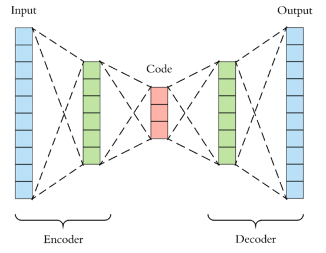
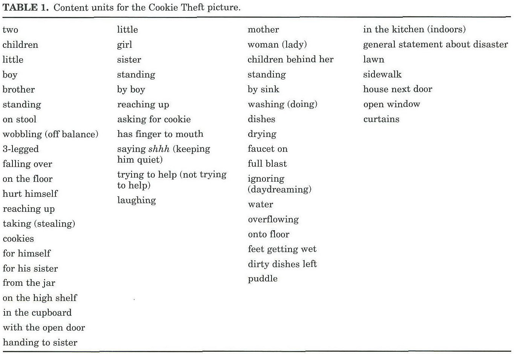

Extractions des variables
| Définitions | Exemples | |
|---|---|---|
| Lemmas | Un lemme, dans le contexte de la linguistique, est la forme canonique, de base ou de référence d'un mot. En d'autres termes, c'est la forme sous laquelle un mot est inscrit dans un dictionnaire ou utilisé pour représenter toutes les variantes flexionnelles d'un mot. L'idée est de regrouper les différentes formes d'un mot (comme les temps passés, futurs, les pluriels, etc.) sous une seule forme standardisée. |
Les lemmes ne sont pas des marqueurs de ponctuation ou des pauses remplies (comme "hmm" ou "euh") qui sont généralement omis dans l'analyse lexicale car ils ne portent pas de sens lexical spécifique. | • Le lemme de "suis", "es", "est", "sommes", "êtes", "sont" est "être". • Pour "chien", "chiens", "chienne", "chiennes", le lemme est "chien". • Les lemmes de "meilleur" et "mieux" est "bon". | | Phonème | Un phonème est une unité sonore de base dans une langue qui permet de distinguer un mot d'un autre. C'est la plus petite unité de son qui peut changer le sens d'un mot. Les phonèmes sont des concepts abstraits utilisés pour analyser la façon dont les sons fonctionnent dans une langue particulière. Ils ne sont pas les sons eux-mêmes, mais plutôt des catégories de sons qui peuvent être prononcés de différentes manières par différents locuteurs tout en étant perçus comme le même son. | En français, les sons /p/ et /b/ sont des phonèmes distincts car ils différencient des mots comme "patte" et "batte". Le phonème /k/ est présent dans les mots "café" et "quai", bien que le son soit produit de manière différente dans chaque mot (avec une lettre différente). En anglais, les phonèmes /t/ et /d/ différencient les mots "tap" (taper) et "dap" (un mot inventé, mais qui sonne différemment grâce au phonème initial différent). | | Tokenisation | Découpage du texte en plusieurs pièces appelés tokens. | « Vous trouverez en pièce jointe le document en question » ; « Vous », « trouverez », « en pièce jointe », « le document », « en question ». | | Stemming | Un même mot peut se retrouver sous différentes formes en fonction du genre (masculin féminin), du nombre (singulier, pluriel), la personne (moi, toi, eux…) etc. Le stemming désigne généralement le processus heuristique brut qui consiste à découper la fin des mots dans afin de ne conserver que la racine du mot. | Exemple : « trouverez » -> « trouv » | | Lemmatisation | Cela consiste à réaliser la même tâche que le stemming mais en utilisant un vocabulaire et une analyse fine de la construction des mots. La lemmatisation permet donc de supprimer uniquement les terminaisons inflexibles et donc à isoler la forme canonique du mot, connue sous le nom de lemme. | | | Similarité Sémantique | La similarité sémantique mesure à quel point deux mots ou concepts sont proches en termes de signification. Dans le contexte des word embeddings, cela se traduit souvent par la proximité de leurs vecteurs dans l'espace vectoriel. | | | Word Embedding | Le Word Embedding (ou plongement lexical en français) est une méthode d'encodage qui vise à représenter les mots ou les phrases d’un texte par des vecteurs de nombres réels, décrit dans un modèle vectoriel (ou Vector Space Model).
D'une manière plus simple, chaque mot du vocabulaire V étudié sera représenté par un vecteurs de taille m. Le principe du Word Embedding est de projeter chacun de ces mots dans un espace vectoriel d'une taille fixe N (N étant différent de m). C'est-à-dire quelle que soit la taille du vocabulaire, on devra être capable de projeter un mot dans son espace. | Modèles d'Embedding CBOW (Continuous Bag-of-Words) : Dans ce modèle, le mot cible est prédit à partir de mots environnants. Il prend en compte le contexte représenté par les mots voisins pour prédire le mot cible. Skip-Gram : Inverse du CBOW, ce modèle prédit le contexte d'un mot donné. Il est efficace pour représenter des mots ou des phrases rares. | | Arbre de dépendance | Dans une grammaire de dépendance, une phrase est représentée sous la forme d'un arbre. Chaque mot dans la phrase est un nœud de cet arbre. Les liens (ou arcs) entre ces mots représentent des relations syntaxiques. | | | Enfants Gauches et Droits | • Enfant Gauche : Un "enfant gauche" d'un mot est un mot qui lui est syntaxiquement subordonné et se trouve à sa gauche dans la phrase. —> Par exemple, dans la phrase "Le chat mange", "Le" est un enfant gauche du mot "chat".
• Enfant Droit : Inversement, un "enfant droit" est un mot subordonné situé à droite. —> Reprenant l'exemple, "mange" est un enfant droit de "chat". | | | | | |
Natural Language Processing (NLP) : Définition et principes
Pourquoi on utilise la lemmatisation et pas le stemming :
Stemming
- Processus: Le stemming consiste à couper les extrémités (sufffixes et parfois préfixes) des mots pour atteindre une forme simplifiée. Ce processus est généralement heuristique et ne tient pas compte du contexte ou de la morphologie complète des mots. Il se base sur des règles simples et fixes pour tronquer les mots.
- Exemple: Dans votre exemple, « trouverez » devient « trouv ». Ici, le suffixe « -erez » est enlevé pour arriver à la racine « trouv ». Cette racine n'est pas nécessairement un mot valide en soi.
- Usage: Le stemming est souvent utilisé dans les systèmes de recherche et de filtrage où la précision n'est pas critique, mais où la vitesse et la simplicité du processus sont importantes.
Lemmatisation
- Processus: La lemmatisation, en revanche, est un processus plus complexe et structuré. Elle implique une analyse morphologique complète des mots pour en déduire leur forme canonique ou lemme. La lemmatisation tient compte du contexte du mot, de son genre, de son nombre, et de son temps pour déterminer sa forme de base.
- Exemple: Reprenant votre exemple, le mot « trouvez » est ramené à sa forme de base « trouver ». Contrairement au stemming, le résultat de la lemmatisation est toujours un mot valide et reconnaissable.
- Usage: La lemmatisation est souvent utilisée dans des situations où la précision est cruciale, comme dans les systèmes de compréhension du langage naturel ou les applications linguistiques où la compréhension du contexte et la précision sémantique sont importantes.
Conclusion
- Stemming: Plus rapide, basé sur des règles heuristiques simples, résulte souvent en un non-mot.
- Lemmatisation: Plus précis, basé sur une analyse morphologique complète, résulte toujours en un mot valide.
Le Word Embedding en profondeur
Le Word Embedding (ou plongement lexical en français) est une méthode d'encodage qui vise à représenter les mots ou les phrases d’un texte par des vecteurs de nombres réels, décrit dans un modèle vectoriel (ou Vector Space Model).
D'une manière plus simple, chaque mot du vocabulaire V étudié sera représenté par un vecteurs de taille m. Le principe du Word Embedding est de projeter chacun de ces mots dans un espace vectoriel d'une taille fixe N (N étant différent de m). C'est-à-dire quelle que soit la taille du vocabulaire, on devra être capable de projeter un mot dans son espace.
Pour cela on aura besoin d'un système pour changer la taille de notre vecteur. Mais alors, comment déterminer ce système ?
Un réseau de neurones spécial et populaire intervient ici, c'est ce qu'on appelle un auto-encoder. Un auto-encodeur se compose de 3 couches.
- Une couche d'entrée (l'encodeur).
- Une couche de sortie (le décodeur ) ayant pratiquement la même taille de celle de l'entrée, elle permet la reconstruction des données initiales.
- Une couche dense au milieu (de taille bien inférieure à la couche d'entrée ou la couche de sortie) : c'est cette couche qui nous permet de faire l'encodage.
Dans ce cas de figure, on pourra définir une fonction h responsable de la compression et la projection du vecteur du mot x. h est simplement une multiplication matricielle des poids de la couche d'entrée W par le vecteur one-hot X du mot.

Il existe une famille d'architectures de modèles et d'optimisations qui peuvent être utilisées pour pour déterminer les incorporations d'un groupes de mots à partir de grands ensembles de données. On l'appelle Word2Vec. Deux architectures très populaires appartenant a cette famille sont le Continuous Bag-of-Words et le skip-gram.
Modèle Continuous Bag-of-Words (CBOW)
Avec le modèle CBOW (sac de mots continu), on commence par choisir un mot (le i-eme mot) et par suite on sélectionne un certain nombre de voisins (à gauche et à droite), et on cherche à entraîner le modèle de sorte qu'il soit capable de prédire le mot numéro "i" si on lui fournissait uniquement ses voisins.
En effet, ces mots voisins représentent le contexte, cela signifie que pour prédire n'importe quel mot ,ses voisins sont pris en considération, donc la projection conserve les informations et le contexte du mot.
Par exemple, les mots ordinateur et clavier sont très différents sémantiquement. Mais puisque leur signification est proche, ils seront donc, dans l'espace d'embedding, proches l'un de l'autre.

Modèle skip-gram (SG)
Le modèle skip-gram est bien similaire, mais cette fois c'est l'inverse : à partir d'un mot "i", le modèle cherche à déterminer le contexte associé.

Skip-gram ou CBOW ?
Skip-gram fonctionne bien lorsque les données d’entraînement ne sont pas assez et il représente très bien les mots ou les phrases rares. À l'inverse, CBOW est plus rapide à l’entraînement que le skip-gram et il est plus précis pour les mots fréquents.
Word Embedding & NLP : définition, exemples
Mécanique de production de la parole
| Caractéristique/famille de caractéristique | Définition | Opérationnalisation | Nombre de caractéristiques | Informations additionnelles | Fonction Python associée |
|---|---|---|---|---|---|
| Longueur de l’échantillon | Nombre total de mots dans l’échantillon. | Nombre total de lemmas qui ne sont pas des marqueurs de ponctuation, incluant les pauses remplies (ex., hmmm). | 1 | ||
| Fragments de mots | Production de seulement une partie des phonèmes d’un mot, sans remplacements de sons ou erreurs d’articulation. Peut être suivi de la production complète du mot ou non. |
Un fragment de mot est une portion d'un mot qui contient un ou plusieurs phonèmes de ce mot, mais pas l'entièreté de ses phonèmes. En d'autres termes, c'est une partie d'un mot, pas le mot complet. | Identification des Fragments : Dans l'échantillon de parole ou de texte, vous cherchez des occurrences où seulement une partie d'un mot est prononcée ou écrite. Cela peut être le début d'un mot, la fin, ou même le milieu, tant que ce n'est pas le mot entier.
Comptage des Fragments : Vous comptez ensuite le nombre total de ces fragments dans l'échantillon. Chaque occurrence d'un fragment de mot est comptée comme une unité distincte.
Exclusion des Erreurs de Prononciation et Remplacements de Sons : Il est important de noter que les fragments de mots ne doivent pas être confondus avec des erreurs de prononciation ou des substitutions de sons. Ce sont des occurrences spécifiques où les phonèmes manquants ne sont pas remplacés par d'autres sons ou erreurs. | 1 | Exemple : « I her kitchkitchen »
Un exemple de cela serait dans un échantillon de parole où quelqu'un commence à dire un mot mais s'arrête avant de le finir, comme commencer à dire "incompréhens..." au lieu de "incompréhensible". Chaque fois que cela se produit, cela compterait comme un fragment de mot. | |
Fluence
| Caractéristique/famille de caractéristique | Définition | Opérationnalisation | Nombre de caractéristiques | Informations additionnelles | Fonction Python associée |
|---|---|---|---|---|---|
| Pauses silencieuses | Segments de l’échantillon au cours desquels aucun son n’est produit après que le participant ait commencé à parler. | Nombre total de fois où | |||
| « [pause] » apparaît dans l’échantillon. | 1 | Pourraient indiquer : difficultés d’accès lexical, difficultés syntaxiques, difficultés de planification du discours (Boschi et al., 2017). | ‣ | ||
| Pauses remplies | Pause dans le discours, marquée par « uhm » ou une variante de ce son (« hmmm », « hum », « er », « ah », etc.). | Nombre total d’occurrences des mots « uhm », « hmmm » « hum », « uh », « er » et « ah » dans l’échantillon. | 1 | Pourraient indiquer : difficultés d’accès lexical, difficultés syntaxiques, difficultés de planification du discours (Boschi et al., 2017). | ‣ |
| Répétitions de mots, de groupes de mots ou d’idées | Mots ou informations de contenu qui sont présentes plus d’une fois dans l’échantillon (répétitions directement collées les unes sur les autres ou plus éloignées dans l’échantillon). | Nombre total de mots, de groupes de mots (combinaisons de 2 à 6 mots) ou d’informations de contenu qui sont présents plus d’une fois dans l’échantillon. | 3 | Pourrait indiquer: déficits lexico- sémantiques, difficultés de planification du discours (Boschi et al., 2017) |
Caractéristiques lexicales
| Caractéristique/famille de caractéristique | Définition | Opérationnalisation | Nombre de caractéristiques | Informations additionnelles | Fonction Python associée |
|---|---|---|---|---|---|
| Parts-of-Speech* | Classe grammaticale d’un mot. |
La catégorisation en parties du discours (Parts-of-Speech, ou POS) se réfère à la classification des mots selon leur fonction grammaticale dans une phrase. Cela inclut la détermination de la classe à laquelle appartient chaque mot, telles que les noms, les pronoms, les verbes, les adverbes, les adjectifs, les prépositions, les déterminants et les conjonctions. | Nombre d’occurrences de chaque classe grammaticale (noms, pronoms, verbes, adverbes, adjectifs, prépositions, déterminants, conjonctions) dans l’échantillon. Calculé des 2 façons suivantes : en nombre absolu et en relation au nombre total de mots dans l’échantillon. | 8 variables x 2 calculs = 16 | Exemples : Noms: maison, voiture, joie. Pronoms: elle, nous, lequel. Verbes: courir, penser, être. Adverbes: rapidement, hier, très. Adjectifs: grand, heureux, bleu. Prépositions: dans, sur, avec. Déterminants: le, un, ces. Conjonctions: et, mais, parce que. | ‣ | | Mots de classe ouverte et fermée | Les "mots de classes ouvertes" et les "mots de classes fermées" sont deux catégories principales dans la classification des mots selon leur rôle dans la langue :
Mots de Classes Ouvertes : Ces mots constituent le contenu principal du discours. Ils sont appelés "ouverts" car de nouveaux mots peuvent être régulièrement ajoutés à ces catégories. Ces mots incluent : - Noms : Représentent des personnes, lieux, objets, idées (ex. : pomme, liberté). - Verbes : Désignent des actions, des états, des occurrences (ex. : courir, être). - Adjectifs : Qualifient ou quantifient les noms (ex. : rapide, grand). - Adverbes : Modifient des verbes, des adjectifs ou d'autres adverbes (ex. : rapidement, très).
Mots de Classes Fermées : Ces mots remplissent une fonction grammaticale plutôt que de transmettre un contenu concret. Ils forment un ensemble relativement fixe et limité de termes. Ces mots incluent : - Conjonctions : Relient des mots, phrases ou clauses (ex. : et, mais). - Pronoms : Remplacent les noms (ex. : elle, celui). - Déterminants : Précisent les noms (ex. : le, un). - Prépositions : Relient un nom à un autre élément de la phrase (ex. : dans, sur). | Nombre total de mots de classe ouverte (noms, verbes, adjectifs, adverbes) et de classe fermée (conjonctions, pronoms, déterminants, prépositions) dans l’échantillon. | 1 | | Voici les étapes générales pour compter les mots de classes ouvertes et fermées en Python en utilisant NLTK :
Télécharger les Ressources Nécessaires : Utilisez nltk.download('punkt') et nltk.download('averaged_perceptron_tagger').
Tokeniser le Texte et Appliquer le POS Tagging : Utilisez word_tokenize pour diviser le texte en mots et pos_tag pour appliquer le POS tagging à chaque mot.
Comptage des Mots : Comptez les occurrences de mots appartenant à des classes ouvertes (noms, verbes, adjectifs, adverbes) et fermées (conjonctions, pronoms, déterminants, prépositions), et calculez ces nombres en termes absolus. | | Ratio de différentes Parts-of-Speech et types de mots | Proportion de mots de différentes classes grammaticales ou de différents types de mots sur le nombre total de mots dans l’échantillon ou sur le nombre total de mots d’une ou plusieurs autre(s) classe(s) grammaticale(s). | Nombre total d’occurrences d’une classe grammaticale dans l’échantillon divisé par le nombre total de mots dans l’échantillon ou par le nombre d’occurrences d’une ou plusieurs autre(s) classe(s) grammaticale(s).
Les ratios suivants seront calculés : - Pronoms/Noms + Pronoms - Noms/Noms + Pronoms - Noms/Noms + Verbes - Verbes/Noms + Verbes - Verbes avec inflexions/Nombre total de verbes - Nombre de mots de classe ouverte/Nombre total de mots - Nombre de mots de classe fermée/Nombre total de mots - Gérondifs/Nombre total de verbes - Gérondifs/Nombre total de mots | 10 | 9 ou 10 ??????? | | | Verbes légers | Un verbe léger est un terme linguistique désignant un verbe qui, pris isolément, possède un contenu sémantique limité ou générique, mais qui, lorsqu'il est combiné avec d'autres mots (comme des noms, des adjectifs, ou des prépositions), contribue à créer une expression verbale avec un sens plus riche ou spécifique. Ces verbes, souvent courants et polyvalents, comme "faire", "mettre", "prendre", acquièrent une signification plus nuancée et spécifique dans le contexte de leur combinaison avec d'autres éléments linguistiques. | Nombre d’occurrences des verbes suivants (à l’infinitif ou conjugués) dans l’échantillon : be, have, come, go, give, take, make, do, get, move, put. Calculé des deux façons suivantes: - en nombre absolu - en relation au nombre total de verbes dans l’échantillon. | 1 variable x 2 calculs = 2 | | | | Pronoms déictiques | Pronoms utilisés pour faire référence directement aux caractéristiques personnelles, temporelles ou de localisation de l’image à décrire. La signification spécifique de ces pronoms dépend du contexte dans lequel ils sont utilisés (Crystal, 2011). | Nombre total d’occurrences des mots des quatre catégories suivantes dans l’échantillon: - Deixis spatiale : « this », « that », « here », « there », - Deixis personnelle : « he », « she », « her », « herself », « him », « himself » - Deixis temporelle : « then », « now », « soon », « recently » - Pronoms déictiques : somme des pronoms déictiques des trois catégories précédentes —> Calculé des 2 façons suivantes : - en nombre absolu - en relation au nombre total de mots dans l’échantillon. | 4 variables x 2 calculs = 6 | | | | Termes indéfinis* | Les "termes indéfinis" dans un contexte linguistique sont des mots utilisés pour faire référence à des objets, des personnes ou des quantités de manière vague ou non spécifique, sans désigner un élément précis. Ils sont souvent employés pour parler de choses de manière générale ou pour indiquer une quantité indéterminée.
Exemples : Objets ou Choses Générales : "thing", "stuff". Indéfinis Quantitatifs : "little", "much", "few", "many", "several". Indéfinis de Personnes : "anyone", "everyone", "no one", "someone", "everybody", "nobody". Autres Indéfinis : "another", "the other", "each", "either", "neither", "both", "other", "others".
Objets ou Choses Générales : "truc", "chose". Indéfinis Quantitatifs : "peu", "beaucoup", "quelques", "plusieurs". Indéfinis de Personnes : "quelqu'un", "tout le monde", "personne", "chacun", "n'importe qui". Autres Indéfinis : "autre", "l'autre", "chaque", "ni l'un ni l'autre", "les deux", "d'autres". | Nombre total d’occurrences des termes suivants dans l’échantillon : « thing », « stuff », « anything », « nothing », « anyone », « one », « either », « neither », « everyone », « no one », « someone », « anybody », « everybody », « nobody », « somebody », « another », « the other », « each », « little », « less », « much », « both », « few », « fewer », « many », « other », « others », « several ».
—> Calculé des 2 façons suivantes : - en nombre absolu - en relation au nombre total de mots dans l’échantillon. | 1 variable x 2 calculs = 2 | J’aimerai essayer de mettre en 10 variables (les 2 de bases et de 2 pour chaque type de terme indéfinis) | | | Moving Average Type- Token Ratio (MATTR) | Le Moving-Average Type-Token Ratio (MATTR) est une mesure en linguistique qui calcule la moyenne mobile pour tous les segments d'une longueur donnée dans un texte. Pour un segment de 50 mots, par exemple, le Type-Token Ratio (TTR) est calculé sur les mots 1-50, 2-51, 3-52, etc., et les mesures de TTR résultantes sont moyennées pour produire la valeur finale de MATTR. Cette approche permet d'obtenir une mesure plus stable et représentative de la diversité lexicale d'un texte, car elle minimise l'impact de la longueur du texte sur le TTR. | Calculé en déplaçant une fenêtre de grandeur « x » à- travers le texte. Pour chaque fenêtre, un Type- Token Ratio est obtenu en divisant le nombre de mots uniques par le nombre total de mots dans la fenêtre. Pour obtenir le MATTR global d’un échantillon, la moyenne des TTR de chaque fenêtre est calculée. La longueur de chaque fenêtre sera déterminée en calculant le nombre de mots moyen dans tous les échantillons de DS.
~~Dans ce projet, il est attendu que les échantillons contiennent en moyenne de 100 à 150 mots.~~ —> Je ne connais pas ce nombre
Trois groupes de fenêtre seront donc obtenus de façon à ce que chaque fenêtre contienne 10, 25 et 40 mots (Covington & McFall, 2010). | 1 | Un MATTR plus élevé indique une plus grande diversité lexicale (Covington & McFall, 2010)
| https://pypi.org/project/taaled/#:~:text=The Moving,15 | | Statistique R de Honoré | La statistique R de Honoré est une mesure de la diversité lexicale qui prend en compte la longueur de l’échantillon, le nombre de mots différents utilisés, et le nombre de mots mentionnés une seule fois. | Elle est calculée selon la formule :
R=100×log(N)/(1−(V1/V))
où : - N est le nombre total de mots dans l'échantillon. - V est le nombre de mots différents dans l'échantillon. - V1 est le nombre de mots mentionnés une seule fois.
Cette mesure est particulièrement utile pour analyser des textes plus longs, car elle réduit la sensibilité de la mesure de diversité lexicale à la longueur du texte. | 1 | Une statistique d’Honoré plus élevée indique une plus grande diversité lexicale. | Pour opérationnaliser et calculer la statistique R de Honoré en Python, vous devez d'abord tokeniser votre texte pour obtenir le nombre total de mots (N), compter le nombre de mots uniques (V), et identifier ceux qui n'apparaissent qu'une seule fois (V1). Ensuite, vous pouvez appliquer la formule ci-dessus pour obtenir la valeur de R. | | Index W de Brunet | Mesure de diversité lexicale reliant la longueur de l’échantillon au nombre de mots différents utilisés dans celui-ci.
| La formule de cet indice est :
W = N ^ (V ^ (-0.165))
où : W est l'indice W de Brunet. N est le nombre total de mots dans le texte (aussi connu sous le nom de compte de tokens). V est le nombre total de mots uniques (aussi connu sous le nom de compte de types). | 1 | Un index W de Brunet plus élevé indique une moins grande diversité lexicale (échelle inversée). Relativement peu affecté par les variations dans la longueur de l’échantillon. | | | Familiarité △ | Degré avec lequel un mot est familier pour les locuteurs d’une langue. | Évaluations subjectives de la familiarité obtenues des normes de Glasgow (Scott et al., 2019) La familiarité moyenne sera calculée pour tous les : - mots - noms - verbes - adjectifs de l’échantillon.
Seulement les noms et verbes étaient calculés | 1 variable x 4 calculs = 4 | Des déficits sémantiques et/ou d’accès lexical pourraient se manifester par une utilisation accrue de mots évalués comme étant très familiers (Fraser et al., 2016). | | | Imageabilité △ | Niveau d’effort impliqué dans la génération d’une image mentale du concept représenté par un mot. | Évaluations subjectives de l’imageabilité obtenues des normes de Glasgow (Scott et al., 2019). L’imageabilité moyenne sera calculée pour tous les : - mots - noms - verbes - adjectifs de l’échantillon.
Les « Glasgow Norms » sont un ensemble de notations normatives pour 5 553 mots anglais évalués sur neuf dimensions psycholinguistiques : l'excitation (arousal), la valence, la dominance, la concrétude, l'imageabilité, la familiarité, l'âge d'acquisition, la taille sémantique et l'association de genre. Ce corpus est unique en plusieurs aspects. Il est relativement large et fournit des normes sur un grand nombre de dimensions lexicales. Pour chaque sous-ensemble de mots, les mêmes participants ont fourni des évaluations sur toutes les neuf dimensions. De plus, le corpus contient un ensemble de 379 mots ambigus présentés seuls ou avec des informations sélectionnant un autre sens. Les relations entre les dimensions des Glasgow Norms ont été initialement étudiées en évaluant leurs corrélations. Une analyse en composantes principales a révélé quatre facteurs principaux, représentant 82 % de la variance. La validité des Glasgow Norms a été établie par des comparaisons avec 18 ensembles différents de normes psycholinguistiques actuelles. Les Glasgow Norms offrent une ressource précieuse, en particulier pour les chercheurs étudiant le rôle de la reconnaissance des mots dans la compréhension du langage. | 1 variable x 4 calculs = 4 | https://pubmed.ncbi.nlm.nih.gov/30206797/ | | | Concrétude △ | Degré avec lequel le concept dénoté par un mot fait référence à une entité perceptible/tangible. | Évaluations subjectives de la concrétude de Brysbaert et al., 2014. La concrétude moyenne sera calculée pour tous les : - mots - noms - verbes - adjectifs de l’échantillon.
Les évaluations du caractère concret sont présentées pour 37 058 mots anglais et 2 896 expressions de deux mots (telles que passage piéton et zoom avant), obtenues auprès de plus de 4 000 participants au moyen d'une étude de normalisation utilisant le crowdsourcing sur Internet pour la collecte de données. Bien que les instructions soulignent que l'évaluation du caractère concret des mots serait basée sur des expériences impliquant tous les sens et réponses motrices, une comparaison avec les normes de caractère concret existantes indique que les participants, comme auparavant, se sont largement concentrés sur les expériences visuelles et haptiques. L'ensemble de données rapporté est un sous-ensemble d'une liste complète de lemmes anglais et contient tous les lemmes connus par au moins 85 % des évaluateurs. Il peut être utilisé dans des recherches futures comme liste de référence de lemmes anglais généralement connus. | 1 variable x 4 calculs = 4 | https://pubmed.ncbi.nlm.nih.gov/24142837/ | | | Fréquence des mots dans le langage courant △ | Évaluation de la fréquence avec laquelle un mot est utilisé dans le langage courant par les locuteurs d’une langue. | Mesure objective de la fréquence des mots tirées du corpus SUBTLEX-US (Brysbaert & New, 2009). La fréquence moyenne sera calculée pour tous les : - mots - noms - verbes - adjectifs de l’échantillon.
La base de données SUBTLEX-US contient les fréquences de mots basées sur les sous-titres de films, comme développé par Brysbaert et New en 2009. Cette base de données offre une mesure objective de la fréquence des mots en anglais américain, tirée d'un large corpus de sous-titres. Elle inclut également des informations sur les parties du discours (PoS) et utilise l'échelle de fréquence de mots de Zipf. Cette approche fournit des données plus représentatives de l'utilisation des mots dans la langue parlée courante, comparée aux fréquences basées sur des textes écrits ou littéraires. Elle est donc particulièrement utile pour la recherche en psycholinguistique et en traitement automatique des langues | 1 variable x 4 calculs = 4 | Les difficultés à accéder à des mots spécifiques résultent généralement en une sur-utilisation de mots avec une fréquence élevée (Wang et al., 2021).
| | | Valence △ | Degré d’agréabilité des émotions invoquées par un mot. | Évaluations subjectives de la valence de Warriner et al., 2013. La valence moyenne sera calculée pour tous les : - mots - noms - verbes - adjectifs de l’échantillon.
L'étude de Warriner et al. de 2013 a impliqué l'évaluation subjective de la valence, de l'excitation et de la dominance pour 13 915 lemmes en anglais. Cette recherche a été réalisée par un groupe de 1 827 participants qui ont évalué la valence émotionnelle de ces mots dans une étude de notation en ligne【https://www.frontiersin.org/articles/10.3389/fcomm.2021.770497/full#:~:text=As we describe more fully,each word was rated】.
La valence, dans ce contexte, se réfère à la qualité affective d'un mot, indiquant s'il évoque des sentiments positifs ou négatifs. Les chercheurs ont trouvé une corrélation forte entre la valence et la dominance, suggérant que les stimuli ne pourraient pas être facilement identifiés comme variant en valence tout en restant constants en dominance【https://www.sciencedirect.com/science/article/pii/S0001691821001098#:~:text=In Warriner et al,Our】.
Les résultats ont montré que l'écart-type moyen des évaluations de valence était de 1,68, tandis que celui des évaluations d'excitation pour les mêmes mots était de 2,30, indiquant une plus grande variabilité dans les évaluations d'excitation que de valence【https://www.sciencedirect.com/science/article/pii/S0346251X19302039】.
Ces normes de valence, d'excitation et de dominance pour les mots anglais sont utilisées par les chercheurs travaillant sur les émotions et les humeurs, la reconnaissance et la mémoire des mots, ainsi que l'analyse du sentiment basée sur le texte【https://pubmed.ncbi.nlm.nih.gov/23404613/#:~:text=Norms of valence%2C arousal%2C and,based sentiment analysis】.
La recherche de Warriner et al. contribue ainsi de manière significative à notre compréhension de la manière dont les mots sont perçus émotionnellement et de leur impact sur divers domaines de la psycholinguistique. | 1 variable x 4 calculs = 4 | | |
△ Caractéristiques psycholinguistiques. Seront calculées pour l’ensemble des mots, mais également de façon séparée pour les noms, les adjectifs et les verbes.
Voici les banques de données pour la langue française :
Open Lexicon FR : Les bases de données lexicales en français
Caractéristiques sémantiques
| Caractéristique/famille de caractéristique | Définition | Opérationnalisation | Nombre de caractéristiques | Informations additionnelles | Fonction Python associée |
|---|---|---|---|---|---|
| 25 informations de contenu (ICUs) | Sujets, lieux, objets et actions séparés qui sont représentés dans l’image Cookie Theft. | ||||
| La liste des unités de contenu (ICUs) pour le test de l'image du vol de cookies, tel qu'établi par Yorkston et Beukelman (1980), est la suivante: |
TABLE 1. Content units for the Cookie Theft picture.
two little children girl little sister boy standing brother by boy standing reaching up on stool asking for cookie wobbling (off balance) has finger to mouth 3-legged saying shhh (keeping him quiet) falling over him quiet) on the floor hurt himself trying to help (not trying to help) reaching up laughing taking (stealing) cookies for himself for his sister from the jar on the high shelf in the cupboard with the open door handing to sister
two mother children woman (lady) little children behind her boy standing brother by sink standing washing (doing) on stool dishes wobbling (off balance) drying 3-legged faucet on falling over full blast on the floor hurt himself ignoring (daydreaming) reaching up water taking (stealing) overflowing cookies onto floor for himself feet getting wet for his sister dirty dishes left from the jar puddle on the high shelf in the cupboard with the open door handing to sister
two in the kitchen (indoors) children general statement about disaster little lawn boy sidewalk brother house next door standing open window on stool curtains wobbling (off balance) 3-legged falling over on the floor hurt himself reaching up taking (stealing) cookies for himself for his sister from the jar on the high shelf in the cupboard with the open door handing to sister | 25 | La liste d’ICUs utilisée sera celle de Kavé & Levy, 2003, qui se veut une mise à jour de la liste de Croisile et al., 1996.
Il faut faire une version française. On peut demander à un LLM de reconnaitre dans d’autres langues si ces informations sémantiques sont présentes. | | | Nombre total d’ICUs | Nombre total d’ICUs qui apparaissent dans l’échantillon. | Nombre total d’ICUs étiquetées comme « VRAI». | 1 | | | | Efficacité | Ratio de la longueur totale de l’échantillon sur le nombre total d’ICUs présentes dans l’échantillon. | Nombre total de mots dans l’échantillon divisé par le nombre total d’ICUs étiquetées comme « VRAI». | 1 | | | | Densité d’idées | Similarité sémantique moyenne entre les idées (conceptuellement distinctes) transmises à l’intérieur d’une fenêtre de mots déplacée à- travers le texte. | Distance cosine (similarité sémantique) moyenne entre toutes les paires de « word embeddings » à l’intérieur d’une fenêtre déplacée à- travers le texte. Les « word embeddings » seront extraits à partir du modèle spaCy « en_core_web_lg » qui a supporté l’identification des dépendances syntaxiques et le Part-of-Speech tagging. À l’intérieur d’une fenêtre, la moyenne de toutes les distances cosines sera calculée. Des fenêtres de 3, 10, 25 et 40 mots avec un incrément de la moitié de la longueur de la fenêtre seront implémentées. | 4 | Une procédure conceptuellement similaire avec une implémentation différente est présentée dans Ivensky, 2019. Word embeddings : représentation vectorielle (numérique) d’un mot. Lors de la création de word embeddings, les mots sont représentés dans un espace sémantique. Les mots avec une plus grande similarité sémantique et régulièrement utilisés dans des contextes similaires auront des vecteurs (chiffres) plus près les uns des autres. | |

Caractéristiques syntaxiques
| Caractéristique/famille de caractéristique | Définition | Opérationnalisation | Nombre de caractéristiques | Informations additionnelles | Fonction Python associée |
|---|---|---|---|---|---|
| Dépendances syntaxiques universelles* | Les dépendances syntaxiques universelles sont un ensemble de règles qui modélisent les relations grammaticales dans les langues. Elles se caractérisent par une structure hiérarchique où les mots sont connectés selon leur fonction syntaxique dans une phrase. Ces règles sont dites "universelles" car elles visent à être applicables à travers différentes langues, offrant un cadre commun pour l'analyse linguistique. |
La relation de dépendance directionnelle est une spécification de la grammaire de dépendance qui établit une connexion entre une unité syntaxique (par exemple, un verbe) et les entités qui composent sa structure relationnelle (comme les sujets et objets). Dans un arbre de dépendance, qui est une représentation graphique de ces relations, les mots ou morphèmes sont les nœuds et les relations de dépendance sont les arêtes, souvent annotées par des fonctions syntaxiques telles que sujet, objet, etc..
https://fr.wikipedia.org/wiki/Grammaire_de_dépendance | Nombre total de chaque dépendance syntaxique. Calculé avec spaCy dependencies (DEP) des 2 façons suivantes : en nombre absolu et en relation au nombre total de mots dans l’échantillon.
Nombre total de chaque dépendance syntaxique : Cela signifie compter combien de fois chaque type de relation de dépendance (comme sujet, objet, complément, etc.) apparaît dans un texte.
Calcul avec spaCy dependencies (DEP) : spaCy est capable d'analyser une phrase et d'identifier ces relations de dépendance. Chaque mot dans une phrase est associé à une étiquette DEP qui décrit son rôle syntaxique.
Deux méthodes de calcul :
- En nombre absolu : Compter le nombre total de fois qu'une dépendance syntaxique spécifique apparaît.
- En relation au nombre total de mots : Calculer la fréquence de chaque dépendance syntaxique par rapport au nombre total de mots dans l'échantillon, ce qui donne une mesure relative. | 42 variables x 2 calculs = 84 | 42 dépendances différentes sont retrouvées dans les échantillons qui seront analysés.
https://universaldependen cies.org/
https://spacy.io/usage/linguistic-features#dependency-parse
Pour illustrer la relation de dépendance directionnelle en syntaxe, considérons la phrase simple : "Le chat mange une souris."
Dans un arbre de dépendance pour cette phrase :
"mange" serait la racine, car c'est le verbe, l'action principale de la phrase. "Le chat" serait un actant, plus précisément le sujet du verbe "mange". Il y aurait donc une flèche directionnelle partant de "mange" et pointant vers "chat" indiquant que "chat" est le sujet de "mange". "une souris" serait un autre actant, l'objet direct du verbe "mange". De même, une flèche directionnelle partirait de "mange" vers "souris" pour indiquer cette relation. Dans cet arbre, chaque mot est connecté par des lignes (ou arêtes) qui montrent comment chaque mot dépend du verbe (ou d'autres mots) pour sa fonction syntaxique dans la phrase. | | | Longueur des dépendances syntaxiques | Longueur moyenne et maximale des dépendances syntaxiques. | Nombre moyen et maximal de mots dans les dépendances syntaxiques d’un échantillon. | 1 variable x 2 calculs = 2 | | | | Enfants gauches et droits* | Dépendants directs d’un mot qui sont connectés à celui-ci par un seul arc à sa gauche ou à sa droite dans l’arbre de dépendance. | On mesure le nombre moyen d'enfants gauches et droits pour chaque mot dans un échantillon de textes. Cette mesure nous aide à comprendre la structure syntaxique des phrases dans cet échantillon.
Calculé à l’aide des commandes spaCy « n_left » et « n_right » des deux façons suivantes : en nombre absolu et en relation au nombre total de mots dans l’échantillon. | 2 variables x 2 calculs = 4 | | https://spacy.io/usage/linguistic-features#navigating | | Verbes avec inflexions | Verbes conjugués. | Verbes dans l’échantillon qui ne correspondent pas à leur lemma tel qu’extrait par spaCy. Calculé des deux façons suivantes: en nombre absolu et en relation au nombre total de mots dans l’échantillon. | 1 variable x 2 calculs = 2 | | | | Clauses subordonnées | Groupe de mots qui n’exprime pas une pensée complète, ne constitue pas une phrase complète. Les clauses complexes impliquant la subordination surviennent lorsqu’un dépendant syntaxique (principal ou non) est utilisé comme structure causale. | Nombre total des 4 types de dépendances universelles de base calculé à l’aide du dependency parse par défaut de spaCy : - Sujets clausaux (csubj) - Compléments clausaux, divisés en ceux dont le sujet doit être contrôlé (sujet à l’extérieur de la clause; xcomp) et ceux dont le sujet n’est pas contrôlé (sujet à l’intérieur de la clause; ccomp) - Modificateurs de clauses adverbiaux (advcl) - Modificateurs de clauses adnominaux (acl) —> Calculé des deux façons suivantes : - en nombre absolu - en relation au nombre total de mots l’échantillon. | 1 variable x 2 calculs = 2 | https://universaldependencies.org/u/overview/complex-syntax.html | | | Longueur moyenne des phrases | Nombre moyen de mots par phrase. | Le nombre moyen de mots par phrase dans l’échantillon sera calculé. Les limites des phrases seront déterminées par le « dependency parse » par défaut de spaCy. | 1 | | https://spacy.io/usage/linguistic-features#sbd | | Phrases incomplètes | Phrases qui ne contiennent pas un minimum d’un verbe et son sujet. | Nombre total de phrases dans l’échantillon qui ne contiennent aucun verbe accompagné de son sujet. —> Calculé des deux façons suivantes : - en nombre absolu - en relation au nombre total de mots l’échantillon. | 1 variable x 2 calculs = 2 | Pourraient indiquer : déficits lexico- sémantiques, déficits syntaxiques, difficultés à planifier le discours (Boschi et al., 2017). | | | Nombre de phrases prépositionnelles (Boschi et al., 2017) | Phrases qui contiennent une préposition, son objet (nom ou pronom) et n’importe quel modificateur de l’objet. | Nombre total de phrases dans l’échantillon qui contiennent une préposition, son objet (nom ou pronom) et n’importe quel modificateur de l’objet. —> Calculé des deux façons suivantes : - en nombre absolu - en relation au nombre total de mots l’échantillon. | 1 variable x 2 calculs = 2 | | | | Nombre de phrases verbales | Phrases de bases contenant au moins un verbe et ces dépendants. | Nombre total de phrases verbales dans l’échantillon. Calculé à l’aide des implémentations de base de spaCy. —> Calculé des deux façons suivantes : - en nombre absolu - en relation au nombre total de mots l’échantillon. | 1 variable x 2 calculs = 2 | | | | Longueur et nombre de phrases nominales | Phrases Nominales Une phrase nominale est un groupe de mots centré autour d'un nom (substantif) qui fonctionne comme sujet, objet, ou complément dans une phrase. Par exemple, dans la phrase "Le chat noir dort sur le tapis", "Le chat noir" est une phrase nominale.
Longueur des Phrases Nominales La longueur d'une phrase nominale est le nombre de mots qui la composent. Elle peut varier de deux mots, comme "Une maison", à une séquence plus longue comme "La grande maison au bord de la route". | Nombre total et longueur moyenne des phrases nominales dans l’échantillon. Calculé à l’aide des implémentations de base de spaCy. —> Calculé des deux façons suivantes : - en nombre absolu - en relation au nombre total de mots l’échantillon. | 2 variables x 2 calculs = 4 | | https://spacy.io/usage/linguistic-features#noun- chunks | | Temps de verbes utilisés | Formes que prennent les verbes pour indiquer à quel moment l’action se situe dans le temps. | Nombre total de verbes conjugués au présent, au passé et au futur dans l’échantillon. —> Calculé des deux façons suivantes : - en nombre absolu - en relation au nombre total de mots l’échantillon. | 3 variables x 2 calculs = 6 | | | | Clauses par phrase | Groupes de mots comprenant un sujet et un verbe, normalement utilisés pour ajouter davantage de détails concernant un nom dans une phrase. | Nombre moyen de clauses par phrase calculé à l’aide des implémentations de base de spaCy. | 1 | | | | Proportion de noms accompagnés de déterminants | Proportion de noms pour lesquels un déterminant est présent. | Nombre de noms dans l’échantillon rattachés à un déterminant sur le nombre total de noms dans l’échantillon. Calculé à l’aide du dependency parse de spaCy. | 1 | | | | Phrases coordonnées (Boschi et al., 2017) | Phrases unies par une ou plusieurs conjonctions de coordination. | Nombre total de phrases dans l’échantillon contenant les conjonctions de coordination suivantes : « and », « but », « for », « nor », « or », « yet », « so ». —> Calculé des deux façons suivantes : - en nombre absolu - en relation au nombre total de mots l’échantillon. | 1 variable x 2 calculs = 2 | Il faut faire une version française. | |
Caractéristiques pragmatiques
| Caractéristique/famille de caractéristique | Définition | Opérationnalisation | Nombre de caractéristiques | Informations additionnelles | Fonction Python associée |
|---|---|---|---|---|---|
| Cohérence locale | Similarité sémantique d’une phrase avec la précédente. |
Le score de similarité sémantique moyen, souvent calculé par la distance cosinus, est une mesure courante en traitement automatique des langues (NLP) pour évaluer la proximité sémantique entre des phrases. Voici comment cela fonctionne et quelques autres méthodes pour évaluer la cohérence locale en NLP :
Distance Cosinus La distance cosinus est une mesure de similarité entre deux vecteurs dans un espace multidimensionnel qui se calcule en mesurant le cosinus de l'angle entre eux. En NLP, cette mesure est souvent utilisée pour comparer des vecteurs de mots ou de phrases, où les vecteurs représentent la distribution sémantique des termes. La fonction cosine_similarity de la bibliothèque scikit-learn est une implémentation de cette mesure. | Score de similarité sémantique moyen (distance cosine) entre les phrases, calculé à l’aide de la fonction cosine_similarity de la libraire scikit learn. | 1 | Des valeurs plus élevées indiquent une plus grande similarité et une moins grande distance sémantique. Des valeurs plus basses indiquent une moins grande similarité et une plus grande distance sémantique. | | | Mots dénotant l’incertitude* | Mots dénotant une incertitude à-propos de la nature d’un élément de l’image à décrire. | Nombre d’occurences des mots suivants dans l’échantillon : « think », « look », « like », « kind », « seem », « maybe », « can », « something ». —> Calculé des deux façons suivantes : - en nombre absolu - en relation au nombre total de mots l’échantillon. | 1 variable x 2 calculs = 2 | Liste de mots inspirée par (Garrard et al., 2014)
Il faut faire une version française. | | | Difficultés à trouver les bons mots* | Utilisation de mots indiquant des difficultés d’accès lexical. | Nombre d’instances des mots suivants dans l’échantillon : « know », « remember », « unable ». —> Calculé des deux façons suivantes : - en nombre absolu - en relation au nombre total de mots l’échantillon. | 1 variable x 2 calculs = 2 | Liste de mots inspirée par Garrard et al. 2014 et Rentoumi et al. 2014.
Il faut faire une version française. | | | Connotation du discours | Émotions générées par le discours. Dépend de la valence moyenne des mots du discours. | Le score de valence moyen de tous les mots de l’échantillon sera obtenu lors de l’extraction des variables psycholinguistiques. Pour chaque mot, les scores possibles se situent entre 1 et 9. Un score plus élevé indique qu’un mot a une connotation davantage positive alors qu’un score plus bas indique une connotation davantage négative. Si la valence moyenne est supérieure ou égale à 5,5, l’étiquette « connotation positive » sera donnée au discours. Si la valence moyenne est supérieure ou égale à 4,5 et inférieure à 5,5, l’étiquette « connotation neutre » sera donnée au discours. Si la valence moyenne est inférieure à 4,5, l’étiquette « connotation négative » sera donnée au discours. | 1 | Je pense qu’on peut calculer ce score en faisant appel à un modèle LLM qui sont fort dans ce type de tâche. | | | Expressions formulaiques (Van Lancker Sidtis et al., 2015) | Expressions ayant une forme fixe et une signification non- littérale avec des nuances attitudinales. | Nombre total d’occurrences des expressions formulaiques suivantes dans l’échantillon : « well », « so », « I guess », « you know », « as it is », « as it were ». —> Calculé des deux façons suivantes : - en nombre absolu - en relation au nombre total de mots l’échantillon. | 1 variable x 2 calculs = 2 | | | | Modalisations (Boschi et al., 2017, Boyé et al., 2014) | Opinions d’un individu concernant le contenu de sa description (ou ce qui se passe sur l’image à décrire) incluant les doutes et les inquiétudes par rapport à sa production. | Nombre total d’occurrences des expressions suivantes dans l’échantillon : « I think », « In my opinion », « of course », « naturally », « unsure », « likely », it «could be that », « unfortunately », « surely ». —> Calculé des deux façons suivantes : - en nombre absolu - en relation au nombre total de mots l’échantillon. | 1 variable x 2 calculs = 2 | | | | Mots de remplissage* | Sons, mots ou groupes de mots utilisés pour mettre l’accent sur ce qui sera dit ou a été dit ou qui signalent qu’un individu réfléchi à ce qu’il dira ensuite. | Nombre total de fois où les expressions « you know » et « I mean » sont mentionnées dans l’échantillon. —> Calculé des deux façons suivantes : - en nombre absolu - en relation au nombre total de mots l’échantillon. | 1 variable x 2 calculs = 2 | Pourraient donner de l’information sur la capacité d’accès lexical d’un individu. | |
Note. Ce tableau se veut une version modifiée de celui qui est retrouvé dans Slegers et al., 2021 et de Pellerin Sophie.
- Caractéristiques qui seront calculées en nombre absolu et en relation au nombre total de mots dans l’échantillon.